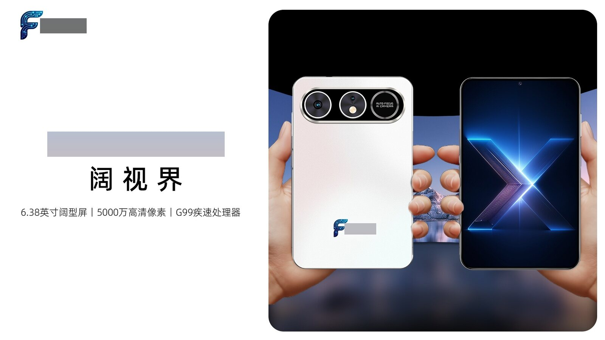
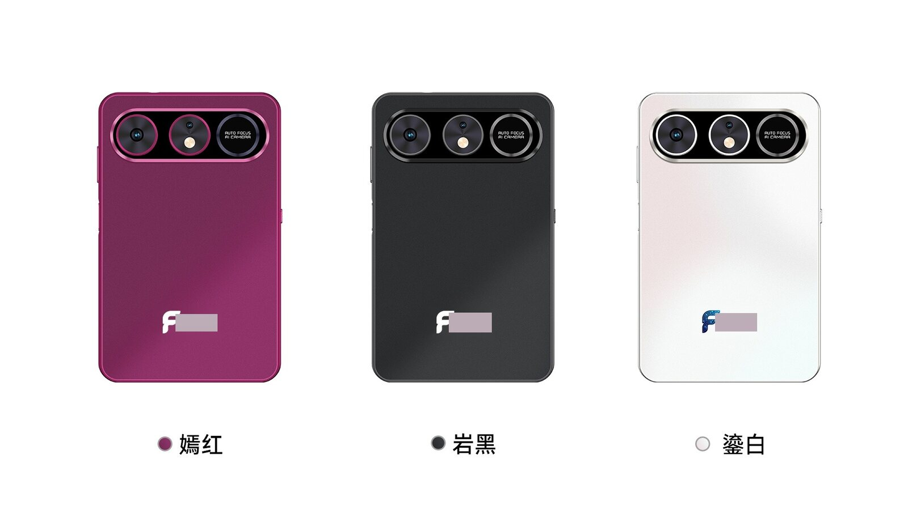
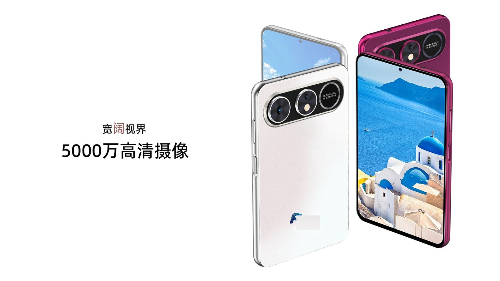
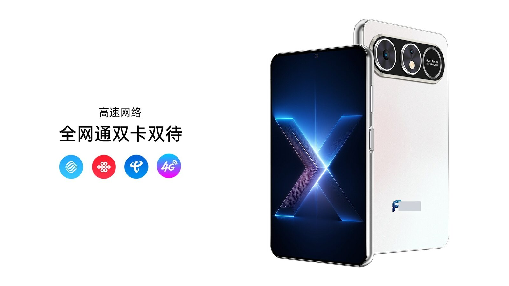
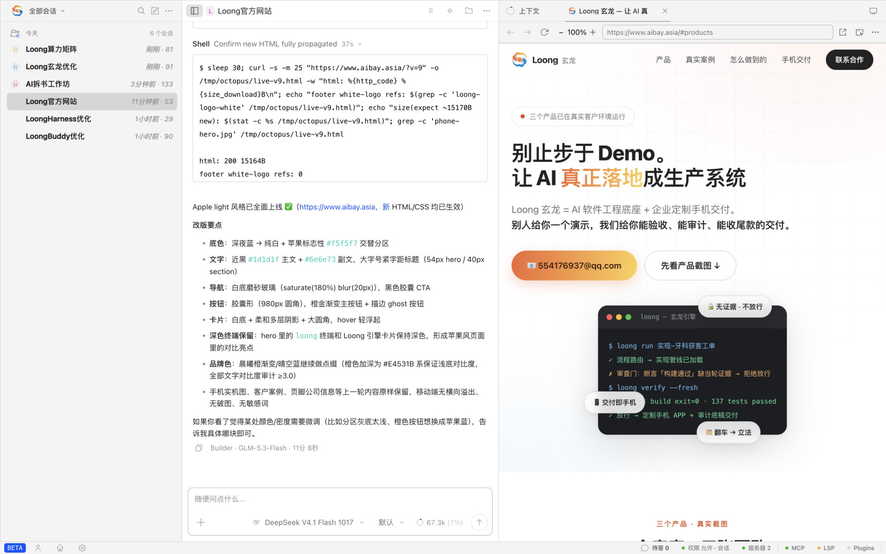
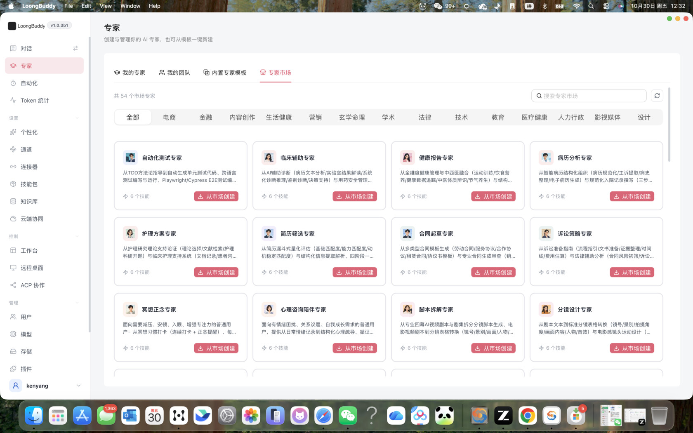
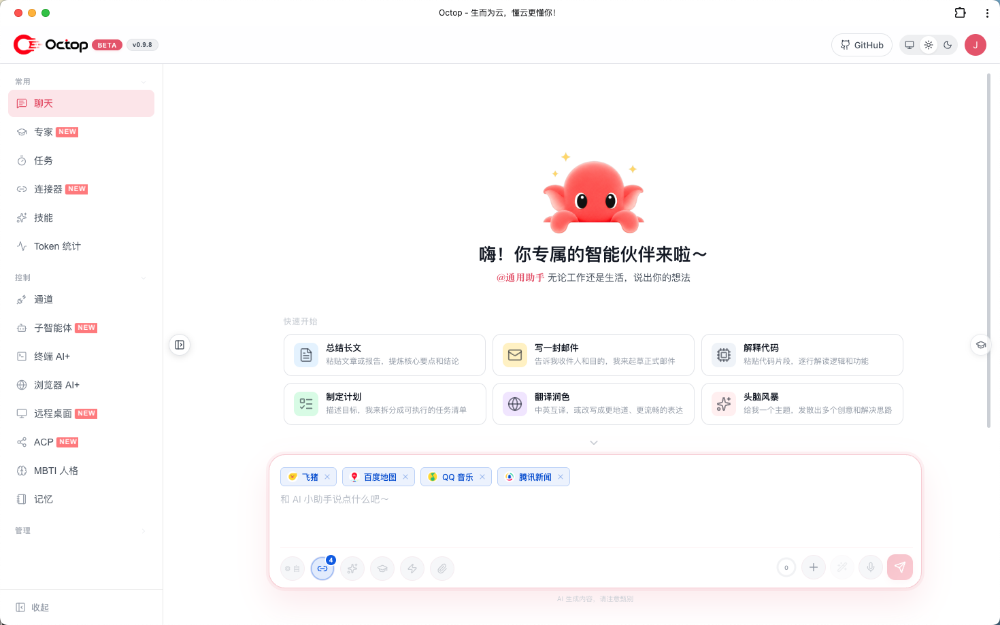
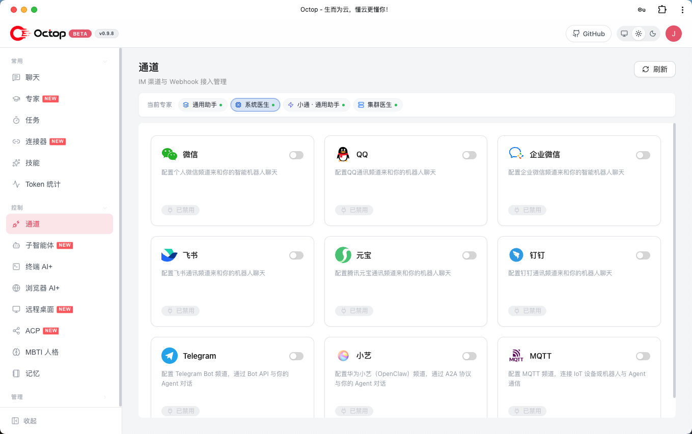
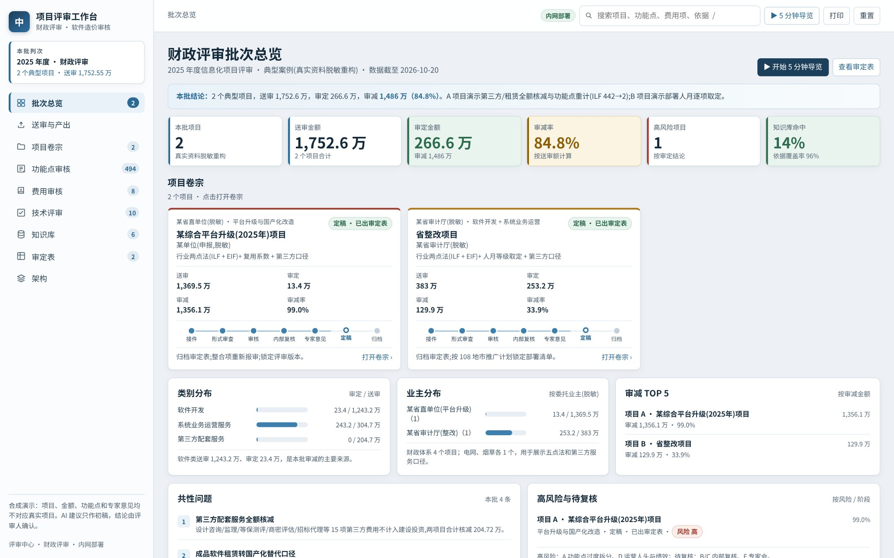

一部手机装下一整条获客链路：找客户、打电话、做内容、发圈跟进，24 小时替你跑。
标准版签约即售；要独一份？开机就是你的品牌、装着你的业务。
企业定制 / 代理合作 → 看看你是不是我们的客户

对中小团队来说，手机是门槛最低的成交载体：有实物、开机就是你的品牌、员工零学习成本——软件的复杂度，全部留在我们这边。我们提供两种交付：标准版 AI 营销手机，签约即售、开箱即用；行业定制版，把软件底座长进企业自己的品牌里。供货、培训、售后，全程我们负责。
找客户、打电话、做内容、发圈跟进——一整条获客链路交给手机里的 AI 员工，24 小时不休息。
不止营销：企业自己的开机品牌 + 预装定制 APP + 场景工作流，交付的是「长在企业手里」的资产。



品牌总部的 SOP、话术、检查表样样齐全，但把它们「送达一线并保证执行」的成本极高。我们把能力拆成一个个长在 AI 手机里的技能（Skill）——员工一句话、一张照片触发，AI 直接给出可执行的结果。零系统集成，30 天试点见效。
出门前说一句「下午 3 点见 XX 门店」→ 手机生成拜访简报：客户档案、主推 SKU 与话术、陈列建议；拜访后口述两句，自动成纪要回传
拜访有效沟通时长 +30%，跟进事项零遗漏巡店拍 5–8 张照片（门头/陈列/价签/物料）→ 按贵司《门店标准化检查表》逐项识别打分，当场出巡检报告与整改清单
季度抽检变日日自检，督导只跑异常门店手机扮演挑剔客户与加盟商，语音对练异议处理；随机抽考成分、肤质、价格政策，练完即打分，30 天新人学习路径内置
新人上手周期缩短 30–50%，讲师从重复授课中解放拍产品 + 念卖点 → 朋友圈、口播稿、种草图文草稿一键生成，内置《广告法》与行业宣称禁用词自动拦截
内容产能翻数倍，合规风险前置拦截主播即问即答：成分、肤感、真假辨别，桌面立一部 AI 手机秒出话术，只吃 SKU 知识库、无集成
单场直播准备从 3–4 小时压到 40 分钟模型与知识库本地/私有部署，会员与动销数据不出内网——对合规敏感的行业（监管通告、召回响应），这是硬门槛优势
敏感数据不出企业内网，全程可审计首发行业：美妆零售（门店 / 柜台 / 加盟体系）。其他重一线、重门店的行业场景，发个邮件聊 30 分钟，技能包按行业持续复制。
手机只是入口。买完之后，你会想往哪走？我们不服务两类人：只要 PPT 的，和想自己搭基建的。我们服务中间最大的一群人——
你试过 ChatGPT 写文案、让 IT 搭过机器人，甚至做出过像样的 demo——然后发现：员工不会用、结果没法验收、出错没人兜底、更不敢谈钱。
你在自己的行业里有客户、有场景、有信任——缺的是一套能稳定交付的 AI 产品。定制不是深开发，是模板 + 语料 + 工作流的配置活。
引擎与前端解耦，行业不同、底座不变。底座专为技能（Skill）与专家能力优化：每个技能走「起稿 → 四角色审查 → 证据链验收」的流水线，专家经验沉淀成可复用、可组合的资产——所以第二个、第三个产品的成本极低。

打开就像给团队配了个不撒谎的技术团队：描述需求，它写代码、跑测试、自己验证，做完的每一步都有证据。Windows / macOS / Linux 全平台免费。

多用户多 Agent 自托管工作台。非技术员工也能用的 AI：像聊天一样发任务，后台跑的是完整的工程管线。



▶ 在线演示（合成数据）财政评审 / 软件造价审核工作台。报价书进来，审定表出去——每一笔审减都带标准条款和历史案例依据。
桌面端全平台免费直装，装好自动更新；工作台与评审台面向企业与伙伴开放申请。所有安装包均提供 SHA256 校验。
多用户多 Agent 自托管。装上就能用；企业与代理伙伴可另行申请场景陪跑。
Windows · .exe (225 MB) ↓ Windows · 免安装 .zip (212 MB) ↓ macOS · .dmg (229 MB) ↓ macOS · 免安装 .zip (225 MB) ↓ Linux · .zip (240 MB) ↓ 场景陪跑申请 →工单拆解到证据链验收的完整过程。合成数据在线演示，随开随看；也可下载私有化部署。
▶ 在线演示 下载 · workbench.zip (2 MB) ↓ 📄 SHA256同一套交付方法，已在政务、金融、教培、营销、健康硬件等 10+ 领域跑出真实系统。先看跑得最快的一个：
财政评审 / 软件造价审核工作台，审定表自动成稿，甲方按审定价直接招标
每笔审定可追溯，报告直接可用自进化期权系统、趋势轮动模拟盘、多智能体研究框架，收盘自动结算出日报
每日日报自动推送，策略迭代零人工值守公众号全自动产稿流水线：知识库挖素材→AI 成稿→合规双闸→定时群发
每天 3 篇长文自动产出，获客内容不断更多租户 Android 指挥台：持仓、策略、会议、路演一屏掌控，含运营后台与内容网关
老板在手机上看全局，出门不带电脑AI 拆书课件与学员材料全自动生成；天赋测评系统软硬件结合自动出报告
一门课的 PPT+讲义+打印稿，一夜备齐健康监测戒指 + 教练 AI 手机：生理数据采集、督卡提醒、异常预警一体化
教练服务从「靠自觉」变成「系统盯着」AI 邀约小程序：名片识别、智能推荐、活动邀约闭环，替代人工筛客
线索筛选从半天压缩到几分钟会议自动签到、资讯抓取-摘要-推送、定时简报直达微信，全员零安装
每天省下的行政时间，还给业务你的行业还没被列出来？发个邮件，聊 30 分钟你的场景——大概率已经有现成模板。
通用 agent 说「做完了」，Loong 要它「证明做完了」。门禁在引擎层写死，不是提示词劝说。
任务先过流程路由，审查验证环节永远不能跳过
「测试通过」必须附当轮命令输出，「我很有信心」过不去
写了 CRM/工单/支付？独立读路径确认才算成功
实现/审查/验证四角色分权，高危操作人工确认
每次翻车沉淀为制度，下个项目天然免疫
大任务不是扔给一台 AI 硬扛——先切分，再按机器体量满编派发，重活上主力、轻活吃碎片产能，资源利用被当成工程问题来设计。
能切块的任务（全仓扫描 / 批量迁移）拆成互不依赖的片，全矩阵同时开工，主力机汇总
构建 → 测试 → 报告这类依赖链：阶段间接力，阶段内并行，重活派主力、轻活顺手派轻节点
单点硬骨头让多台机器独立解，谁先通过验收谁的答案上——费额度，只用在难题上
重构建上 16 核大内存，巡检简报交给 2 核小机；不撑爆小机器，也不让大机器闲着
10 人小班，申请制。带一个你的真实场景来，白天拆流程、晚上带走可试点的方案——课件和讲义由我们自己的 AI 流水线自动生成，工作坊本身就是玄龙工作法的现场演示。
你出行业知识和客户关系，我们出底座、手机供应链和交付方法论。三级伙伴体系逐级进阶——每一级都有真实可交的东西、明确的收益，和更大的牌桌。
站上讲台，你就是客户见到的第一个 AI 引路人
出师带走一整套行业资产，挂你自己的品牌独立接单
不再用我们的系统，而是和我们一起定义这个行业
三级之上，是一个越转越快的飞轮：
每个行业先扶一个主理人——带上你的行业来聊聊，看你从哪一级切入
成立于 2015 年 2 月，注册于广州市黄埔区中新广州知识城。专注企业级 AI 落地服务，主营 FDE 前向部署工程、企业 AI 能力培训与 AI 定制智能终端，服务对象涵盖国有企业、金融机构、政府部门及成长型企业。
公司先后控股、参股多家信息技术、机器人科技与文化传播领域企业，形成「咨询 + 工程 + 终端 + 文化传播」协同生态，可快速组织跨企业联合体承接综合性项目。
10 人小班 · 申请制，按场景匹配度录取。填写后我们会尽快联系你。